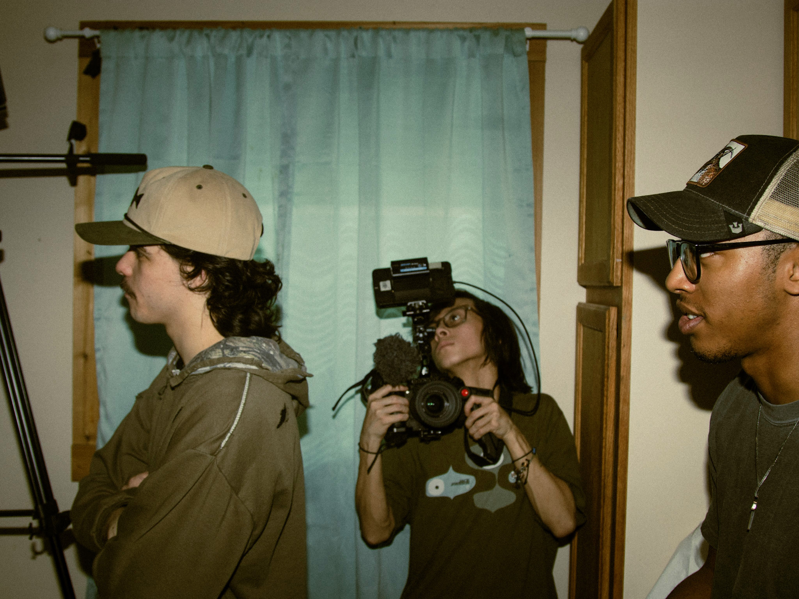

Continuum is a media agency based in DFW that connects businesses with talented local filmmakers to produce high-quality content, from commercials to branded storytelling. Our model is simple: we handle the business side, bringing in projects and clients, while our filmmakers focus on what they do best—creating. In exchange, we reinvest a portion of the profit back into their passion projects, like short films and documentaries, so they can keep growing creatively while making a living doing what they love. It's a win-win; businesses get premium content, and filmmakers get both income and support for their art.
Learn MoreDiscover unparalleled expertise at Continuum Creative, where setting up your consultation is simple and efficient. Schedule an appointment today to connect with professionals who excel in bringing your vision to life.